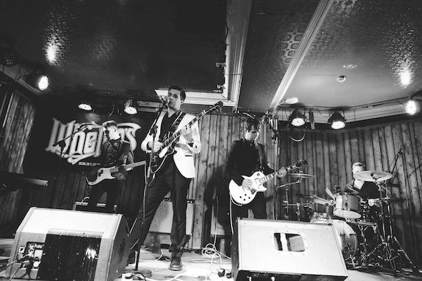

BEGINNINGS
Formed in 2012 by John Hennessy, Black Pope takes inspiration from bands such as The Cramps, Queens of the Stone Age, Iggy Pop and Buddy Holly. Colm joined the group in 2017 as a bass player and went on to fill in on guitar duties. The band's sound can be described as an "homage" (or derivative, depending on who you ask) to the 70's horror rock sound.
WHITE SMOKE
In 2017, the band recorded their full length debut album White Smoke with producer Cian Riordan (St. Vincent, Mini Mansions, Slash). Soon after, they relocated to Berlin to begin mixing and mastering the songs. The first single, Goth Girl, was released in 2020, while the most recent single, Demon Stomp, was released in July 2021.